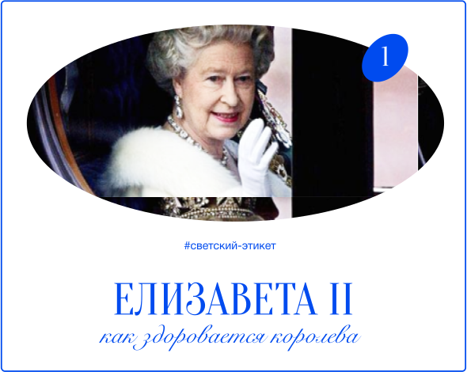
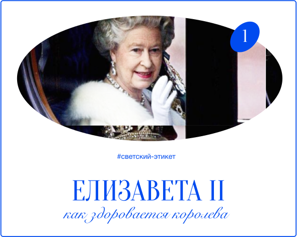

О нас
КАК ЗНАМЕНИТОСТИ ПОРТЯТ
ВПЕЧАТЛЕНИЕ О СЕБЕ?
КАК ЗНАМЕНИТОСТИ
ПОРТЯТ ВПЕЧАТЛЕНИЕ
О СЕБЕ?
Разбираем случаи, когда селебрити вели себя крайне
возмутительно по отношению к другим людям
#инфлюенсеры
Удивительно, насколько фанаты могут не реагировать на ужасное поведение селебрити,
продолжая
восхвалять своего кумира. Мы
откроем глаза на то, что они могут неуважительно
относиться не только к обслуживающему персоналу, но и к
тем людям,
которые сделали
их популярность возможной. В этой статье мы расскажем о нескольких звёздах шоу-бизнеса,
которые нарушали
правила этикета при общении с фанатами.
Удивительно, насколько фанаты могут
не реагировать на ужасное поведение
селебрити,
продолжая
восхвалять своего
кумира. Мы откроем глаза на то, что
они могут неуважительно относиться
не
только к обслуживающему персоналу,
но и к тем
людям, которые сделали
их популярность возможной. В этой
статье мы расскажем о нескольких
звёздах
шоу-бизнеса,
которые нарушали
правила этикета при общении с фанатами.
ДЖАСТИН БИБЕР
Похоже, что поведение Джастина (
ухудшается по мере роста его фанатской базы.
Некогда
приятный подросток теперь
демонстрирует сомнительные манеры,
либо беря на сцене телефоны фанатов,
избегая выступлений, либо
жалуясь на то,
что чувствует себя цирковой собакой.
Похоже, что поведение Джастина (
ухудшается по мере роста
его фанатской базы. Некогда
приятный
подросток теперь демонстрирует
сомнительные манеры, либо беря
на сцене телефоны фанатов, избегая
выступлений, либо жалуясь
на то,
что чувствует себя цирковой собакой.
а
)
Особенно возмутились люди, когда Бибер
по известным только ему причинам плюнул
на своих
преданных поклонников с балкона,
пока они с нетерпением ждали его на улице.
Этот инцидент его
позабавил. Во
время
праздников он публично оскорбил поклонницу,
отдыхающую у бассейна, доведя её до слез.
Особенно возмутились люди,
когда Бибер по известным только
ему причинам плюнул на своих
преданных поклонников с балкона,
пока они с нетерпением ждали
его на улице. Этот инцидент
его
позабавил.
Во время праздников
он публично оскорбил поклонницу,
отдыхающую у бассейна, доведя
её до слез.
В 2016 году произошёл инцидент, который
многих заставил пересмотреть своё отношение
к
любимому певцу. Он ударил поклонника
по лицу перед выступлением в Барселоне.
О причинах такого
поведения нам остаётся
только гадать.
В 2016 году произошёл инцидент,
который многих заставил
пересмотреть своё отношение
к
любимому певцу. Он ударил
поклонника по лицу перед
выступлением в Барселоне.
О причинах такого
поведения
нам остаётся только гадать.


КИМ КАРДАШЬЯН
По иронии судьбы, Ким Кардашьян,
чья карьера основана на нахождении в центре
внимания,
считает своих фанатов людьми,
которые лезут в чужую жизнь. Если вспомнить
причины её популярности, то становится
даже смешно.
По иронии судьбы, Ким Кардашьян,
чья карьера основана на нахождении
в центре внимания,
считает
своих
фанатов людьми, которые лезут
в чужую жизнь. Если вспомнить причины
её популярности, то
становится
даже смешно.
Она отказывается общаться с поклонниками,
фотографироваться или признавать
их
присутствие. Ситуация изменилась
ещё больше, когда услышали, как она жалуется
своему бывшему мужу Крису Хамфрису на то,
как её
раздражают поклонники. Во время
разговора она назвала своих зрителей
«наивными, тупыми идиотами, у
которых
нет личной жизни».
Она отказывается общаться
с поклонниками, фотографироваться
или признавать их
присутствие.
Ситуация изменилась
ещё больше,
когда услышали, как она жалуется
своему бывшему мужу Крису
Хамфрису на то, как её
раздражают
поклонники. Во время разговора
она назвала своих зрителей
«наивными, тупыми идиотами,
у которых
нет личной жизни».
Этот комментарий является странным, учитывая,
что Ким Кардашьян преимущественно
демонстрирует свою собственную жизнь
Этот комментарий является странным,
учитывая, что Ким Кардашьян
преимущественно
демонстрирует
свою собственную жизнь
КЕНДАЛЛ ДЖЕННЕР
В 2014 году модель Кендалл Дженнер (
столкнулась с обвинением со стороны официантки,
которая утверждала, что не
досчитала счёт
на 60 долларов и не оставила чаевых. Ситуация
обострилась, когда Кендалл якобы швырнула
деньги в лицо официантке и засмеялась,
когда
она попыталась погнаться за ней,
чтобы забрать оплату. Кендалл отвергла эти слухи
как «смехотворные» и
отправила на сервер письмо
о прекращении противоправных действий.
В 2014 году модель Кендалл Дженнер (
столкнулась с обвинением
со стороны официантки,
которая
утверждала, что не досчитала
счёт на 60 долларов и не оставила
чаевых. Ситуация обострилась,
когда Кендалл якобы швырнула
деньги в лицо официантке
и засмеялась, когда она попыталась
погнаться за ней, чтобы забрать
оплату. Кендалл отвергла эти слухи
как «смехотворные» и
отправила
на сервер письмо о прекращении
противоправных действий.
b
)
Три года спустя Кендалл попала в ещё один
инцидент в баре в Бруклине. Instagram
(запрещённая социальная сети на
территории РФ)
опубликовал фотографию, на которой изображена
купюра в 24 доллара, подписанная Кендалл,
но поле для чаевых осталось пустым. Подпись
к посту призывала людей не забывать давать
чаевые своему бармену. Кендалл настаивала
на том, что она заплатила наличными, но бар
обвинил её во лжи.
Три года спустя Кендалл попала
в ещё один инцидент в баре
в Бруклине. Instagram
(запрещённая
социальная сети на
территории РФ)
опубликовал фотографию,
на которой изображена купюра
в 24 доллара, подписанная
Кендалл,
но поле для чаевых осталось
пустым. Подпись
к посту призывала
людей не забывать давать чаевые
своему бармену. Кендалл
настаивала
на том,
чтобы она заплатила наличными,
но бар обвинил её во лжи.


ТИМАТИ
Яркий и своеобразный характер Тимати,
возможно, способствовал бы его высоким
рейтингам,
если бы он был более сдержанным.
Яркий и своеобразный характер
Тимати, возможно, способствовал
бы его высоким рейтингам,
если бы он был более сдержанным.
Однажды рэпер принял участие
в мероприятии в честь жертв
терактов в Санкт-Петербурге.
Однако одна из поклонниц Тимати
выразила недовольство его появлением
на публике в
спортивном костюме,
прокомментировав его фотографии. Тимати
импульсивно отреагировал, назвав девушку
пустоголовой курицей. Обе стороны, вероятно,
виноваты в этой ситуации, но ни одна из них
не хотела
этого признавать.
Однако одна из поклонниц Тимати
выразила недовольство
его появлением на публике
в
спортивном костюме,
прокомментировав его фотографии.
Тимати импульсивно отреагировал,
назвав
девушку
пустоголовой
курицей. Обе стороны, вероятно,
виноваты в этой ситуации,
но ни одна из нихн е
хотела этого
признавать.
Наша редакция знает немало примеров неподобающего поведения наших любимых селебрити,
однако
нам важно не забывать, что
они тоже люди и имеют право на ошибку. Если ошибка
повторяется не раз и не два, то это уже повод для
фанатов задуматься
о том, насколько
порядочным является их любимый звёздный краш.
Наша редакция знает немало
примеров неподобающего поведения
наших любимых селебрити,
однако нам
важно не забывать, что
они тоже люди
и имеют право на ошибку. Если ошибка
повторяется не раз и не два, то это
уже повод
для фанатов задуматься
о том, насколько порядочным
является их любимый звёздный краш.
вам может понравиться
 
